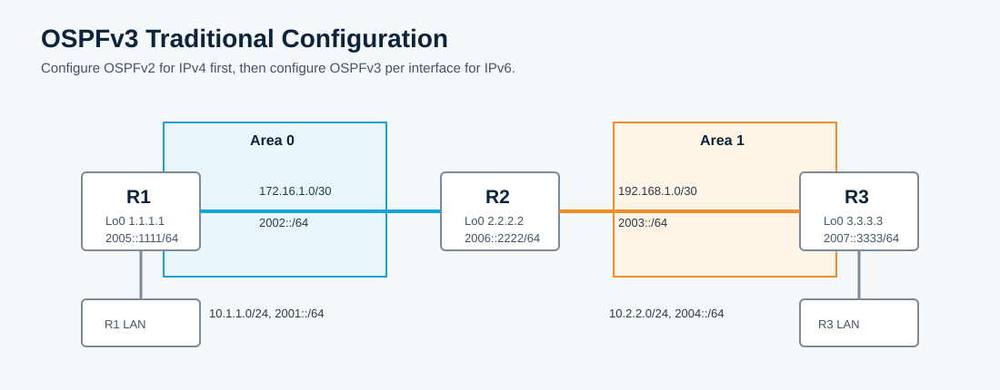

Overview
This lab configures IPv4 OSPFv2 first, then configures OSPFv3 using the traditional per-interface method. The CML topology starts with IPv4 and IPv6 addressing already applied. OSPFv2, IPv6 unicast routing, and OSPFv3 are intentionally absent.
All commands in this guide use the CML interface names shown in the topology.
Topology
R2 is the ABR between area 0 and area 1. R1 connects to area 0, while R3 and the R3 LAN are in area 1.

Task 1: Configure OSPFv2 for IPv4 Reachability
Configure OSPFv2 so the IPv4 topology is reachable before adding OSPFv3.
! R1
conf t
router ospf 1
network 0.0.0.0 255.255.255.255 area 0
end
! R2
conf t
router ospf 1
network 172.16.1.0 0.0.0.3 area 0
network 192.168.1.0 0.0.0.3 area 1
network 2.2.2.2 0.0.0.0 area 1
end
! R3
conf t
router ospf 1
network 192.168.1.0 0.0.0.3 area 1
network 3.3.3.3 0.0.0.0 area 1
exit
interface Ethernet0/1
ip ospf 1 area 1
endTask 2: Verify IPv4 OSPF
On R3, confirm you have inter-area IPv4 routes and can reach R1's loopback.
! R3
show ip ospf neighbor
show ip route ospf
show ip route
ping 1.1.1.1Task 3: Configure Traditional OSPFv3 on R1
Enable IPv6 routing and attach OSPFv3 process 1 to each IPv6-enabled interface. Suppress adjacency formation on the LAN-facing and loopback interfaces.
! R1
conf t
ipv6 unicast-routing
ipv6 cef
ipv6 router ospf 1
router-id 1.1.1.1
passive-interface Loopback0
passive-interface Ethernet0/0
exit
interface Ethernet0/0
ipv6 ospf 1 area 0
interface Ethernet0/1
ipv6 ospf 1 area 0
interface Loopback0
ipv6 ospf 1 area 0
endTask 4: Configure Traditional OSPFv3 on R2
Make R2 the ABR between area 0 and area 1.
! R2
conf t
ipv6 unicast-routing
ipv6 cef
ipv6 router ospf 1
router-id 2.2.2.2
exit
interface Ethernet0/0
ipv6 ospf 1 area 0
interface Ethernet0/1
ipv6 ospf 1 area 1
interface Loopback0
ipv6 ospf 1 area 1
endTask 5: Configure Traditional OSPFv3 on R3
Place R3 in area 1 and make the LAN and loopback passive.
! R3
conf t
ipv6 unicast-routing
ipv6 cef
ipv6 router ospf 1
router-id 3.3.3.3
passive-interface Ethernet0/1
passive-interface Loopback0
exit
interface Ethernet0/0
ipv6 ospf 1 area 1
interface Ethernet0/1
ipv6 ospf 1 area 1
interface Loopback0
ipv6 ospf 1 area 1
endTask 6: Verify OSPFv3 Routes, Neighbors, and Database
On R3, verify IPv6 inter-area routes, the OSPFv3 neighbor, the interface state, and the OSPFv3 database.
! R3
show ipv6 route
show ipv6 route ospf
show ipv6 ospf neighbor
show ipv6 ospf interface Ethernet0/0
show ipv6 ospf database
ping 2005::1111